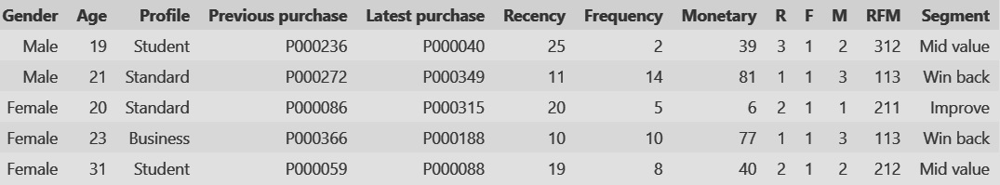
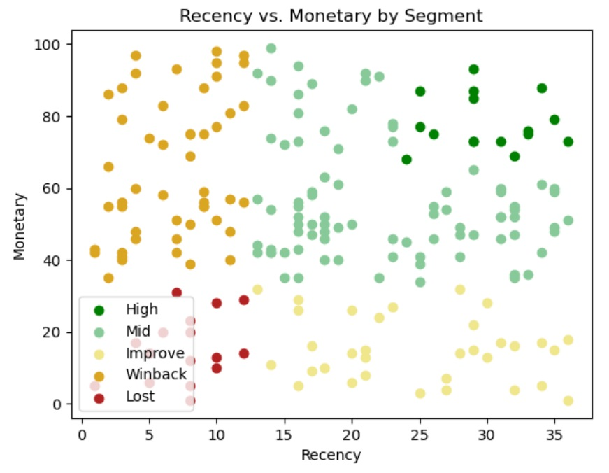
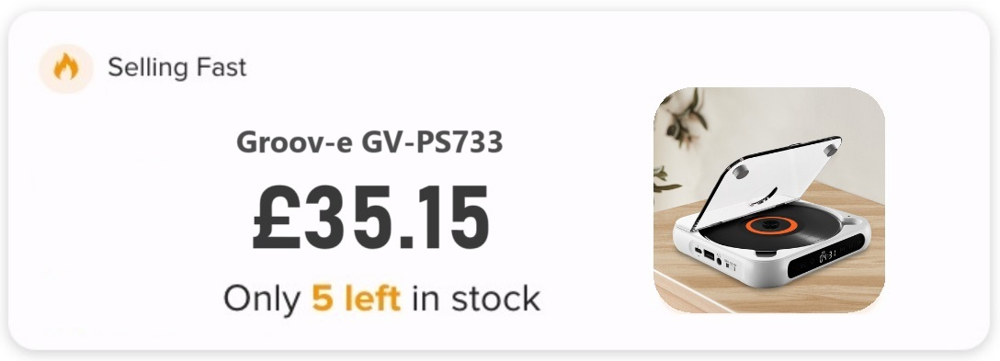
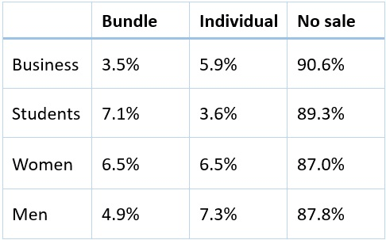

Customer Segmentation and Product Recommendation with Dynamic Pricing
Instead of sending general marketing materials to all its customers, a company would like to understand the different types of customer it has and target them with offers tailored to their specific purchasing behaviour and value to the company. In particular, more resources will be spent on high value customers and customer with untapped revenue potential.
Using a customer's own purchase history to recommend products increases the relevance of the suggestion for the customer, which improves sale success. Prices can also be adjusted dynamically based on the popularity of the product to maximise profit by linking price to customers' willingness to pay.
1. Project objectives
● Segment customers according to recency, frequency and monetary value of their purchases (RFM scores).
● Cluster products using TF-IDF of product descriptions and recommend product for each customer.
● Scrape and clean competitor prices from price comparison site.
● Assess success rate with different demographics and suggest improvements.
● Set price for recommended products based on competitor pricing, cost, sales history and quantity in stock.
2. Methodology
2.1. Data collection and preprocessing
The customer dataset was taken from Kaggle, containing data on customer demographics and purchase value. The product
dataset was scraped from a price comparison site using BeautifulSoup. Its data includes product descriptions and competitors'
sale prices.
Duplicate products, products with descriptions in languages other than English, and products lacking competitor
price data were removed. Each customer was randomly assigned products for their purchase history.
2.2. Customer segmentation
Customers were segmented using RFM scores, based on the frequency (total number) of purchases, the recency of the last purchase in the past 36 months, and the total monetary of value to date. The values for recency, frequency, and monetary value were scored 1 to 3 from lowest to highest and concatenated to give 27 three-digit RFM scores from the lowest score, 111, to the highest, 333.

Recency, Frequency, Monetary values converted to RFM scores.
Five customer segments were created based on customer value to the company, and the 27 RFM scores were distributed between these segments. Separate marketing approaches can be developed for each segment.

Customers segmented on value (RFM scores)
2.3. Product clustering and recommendation system
Product descriptions were tokenized, and the TF-IDF score (term frequency-inverse document frequency) was calculated. Principal component analysis (PCA) was conducted on the TF-IDF scores, and PC1 and PC2 were plotted against each other. The distance between products was calculated based on this representation.
Several products were selected for each customer based on the clusters, one to be sold individually and one to be sold as part of a bundle with a cheaper filler product.

Products clustered by TD-IDF of descriptions
2.4. Dynamic pricing
A new price was set for each recommended product, based on recent sales, number of items in stock, cost and competitor prices.
2.5. Limitations
The descriptions are somewhat repetitive; products from distinct categories are often similarly worded. For this reason, stopwords were removed, since they could influence the TF-IDF values. For this task, removing context is not expected to create ambiguity. Removing stopwords reduces the number of features, so this should also lower computational cost.
3. Results

A product selected for a customer with new calculated price
Customer buying behavior varies significantly by customer type (Business, Student, Standard). Customers in the business category purchased fewer bundles than other categories and bought less recommended products overall. Conversely, students buy the most bundles of any customer type. Female customers in the Standard category rank second in bundle purchases and show equal interest in bundles and individual products, buying the most recommended products of any customer type. Standard male customers purchase fewer bundles than women but buy the most individual items.

Response rate of different demographics
4. Insights
The results highlight the importance of tailoring marketing approaches to each customer segment. Continual
improvement can be achieved through ongoing monitoring of the recommendation system's success rates, enabling informed
adjustments to the marketing strategy.
In the future, A/B testing could be conducted on price to determine the price sensitivity of distinct customer types,
allowing for more refined pricing strategies to be implemented.